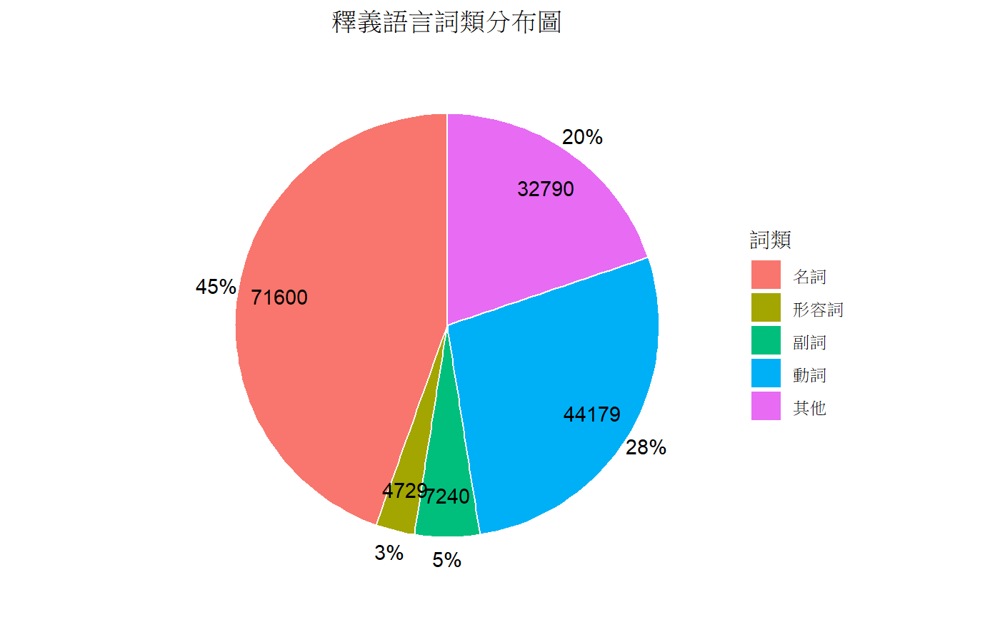
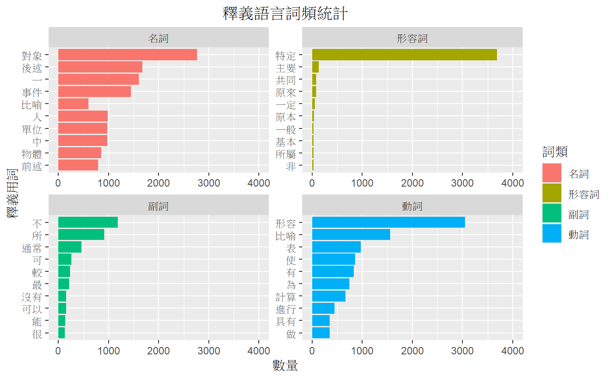

最新消息
| CWN2.0 2022/06 資料更新！ | 2022/06/21 | |
| CwnGraph 0.3.0已釋出 | 2022/04/22 | |
| 歡迎參與CWN詞意標記工作小組！ | 2022/02/01 |
| CWN2.0 2022/06 資料更新！ | 2022/06/21 | |
| CwnGraph 0.3.0已釋出 | 2022/04/22 | |
| 歡迎參與CWN詞意標記工作小組！ | 2022/02/01 |
中文詞彙網路（Chinse Wordnet，CWN），是一項試圖解決詞義（sense）以及詞彙語意關係（lexical semantic relations）的語言知識資源。中文詞網的核心元素是中文詞彙的同義詞集（synsets）以及連繫各詞集的語意關係；透過語意關係，將各個同義詞集連接起來，形成語意網絡。
中文詞彙網路累積了近二十年的研究成果，起初由中研院語言學研究所推動，於 2010 年完成，目前中文詞彙網路由臺大語言所負責維護，並著力開發更廣泛且靈活的工具資源以供使用，例如：XML、SQLite格式、WordNet LMF資料格式等等。
中文詞彙網絡收錄範圍為實詞（open class），亦即名詞、動詞、形容詞及副詞。第一次使用中文詞網，可以參考新手教學、快速上手/小工具。
在數位人文的時代，附有標記的語料資料常是計算語言學與自然語言處理不可或缺的實用資源，更多語言的詞彙網路建立，也讓這項資源成為跨語言的研究素材。
CWN中單詞之間的主要關係是同義關係，例如關和閉或車子與車等同義詞。同義詞指的是表示相同概念並且在許多情況下可以互換的無序單詞集合（同義詞集）。 CWN的1.2萬個同義詞集中的每一個都通過少量的“概念關係”連結到其他同義詞集。此外，同義詞集包含一個簡短定義（“釋義”），並且在大多數情況下，一個或多個簡短的句子說明了同義詞集中的單詞的用法。具有多種不同含義的單詞形式以多種不同的同義詞集表示。因此，CWN中的每個形式含義對都是唯一的。
同義詞集之間最頻繁編碼的關係是超從屬關係（也稱為上下位或ISA關係）。它將相對籠統的同義詞集（例如{植物}）連結到相對具體的同義詞集（例如{花}和{杜鵑花}）。因此，在CWN中，植物類別包括花，而花又包括杜鵑花。相對而言，花和杜鵑花等概念構成了植物類別。所有名詞層次最終都在根節點{事物}上。上下關係是遞移性的：如果杜鵑花是一種花，而花是一種植物，那麼杜鵑花是一種植物。 CWN區分類型（通用名詞）和實例（特定人員、國家/地區和地理實體）。因此，杜鵑花是花的一種，波蘭是國家的一個實例。實例和下位詞在其層次結構中始終是下位（子）節點。
另外一個語意關係是反義關係。成對的“直接”反義詞，例如乾-濕和老-少，反映了強烈的語義對比。這些極性形容詞中的每一個又與許多“在語義上相似”的形容詞相關：老與長、大、邁，少與小相關。語義上相似的形容詞是其另一極“形容詞”的“間接反義詞”。
CWN的大多數關係都將來自同一詞性（POS）的詞連結起來。因此，CWN實際上包含四個子網，每個子網分別用於名詞、動詞、形容詞和副詞，跨POS的關係很少。
| 謝舒凱 ---- LOPE 實驗室 主持人 |
| 曾昱翔 ---- LOPE 實驗室 博士後研究人員 |
| 古貿昌 ---- LOPE 實驗室 博士生 |
| 石晴方 ---- LOPE 實驗室 碩士生 |
| 江琼玉 ---- LOPE 實驗室 研究人員 |
| 陳蓓怡 ---- LOPE 實驗室 碩士生 |
| 廖永賦 ---- LOPE 實驗室 碩士生 |
| 李智堯 ---- LOPE 實驗室 博士生 |
| 張瑜芸 ---- 政大語言所助理教授 |
| 施孟賢 ---- 政大博士後研究員 |
| 黃居仁 ---- 香港理工大學教授 |
Hsieh, S. K., Tseng, Y. H., Lee, C. Y., & Chiang, C. Y. (2019). Modeling the Idiomaticity of Chinese Quadra-syllabic Idiomatic Expressions. Paper presented in the 33rd Pacific Asia Conference on Language, Information and Computation. Hakodate, Japan.
Tseng, Y. H. & Hsieh, S. K. (2019). Augmenting Chinese WordNet semantic relations with contextualized embeddings. Paper presented in the 10th Global WordNet Conference. Wroclaw, Poland.
Hsieh, S. K., Tseng, Y. H., Lee, C. Y., & Chiang, C. Y. (2018). Fluid Annotation: A Granularity-aware Annotation Tool for Chinese Word Fluidity. Paper presented in Eleventh International Conference on Language Resources and Evaluation. Miyazaki, Japan.
在CWN用於釋義的釋義語言當中，目前總共有160,538個單詞，包含14,961個不重複的中文詞彙，在這160,538個單詞當中，名詞的數量最多，共71,600個名詞，佔45%。其次為動詞，共44,179個動詞，佔28%。其餘有7,240個副詞，佔5%。4,729個形容詞，佔3%。剩下大約20%則不屬此四個詞類之一。詳細比例見下圖所示。
以下圖表為CWN釋義語言中，使用次數最多的前10個名詞、形容詞、副詞、以及動詞。
{{example}}